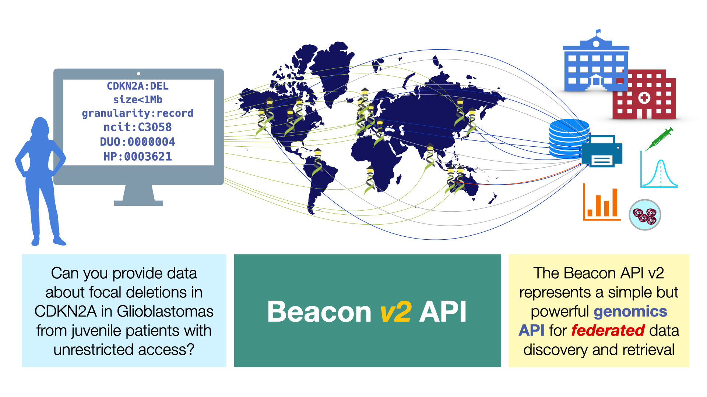

Welcome to the Beacon Documentation¶
Beacon v2 is a protocol and specification established by the Global Alliance for Genomics and Health (GA4GH) that defines an open standard for the discovery of genomic (and phenoclinic) data in biomedical research and clinical applications. Beacon facilitates the discovery of genomic variants and biomedical data in single or distributed resources with the goal to empower federated data models - i.e. the discovery (and potential retrieval) of data from different organisational and geographic locations.

The Beacon specification is developed by an international team of sientists and technology experts, as a product of the GA4GH Discovery work stream and with major support from the European bioinformatics infrastructure organization ELIXIR.
The current version of the protocol is Beacon v2 represents a complete revision of the original code base and introduced a number of powerful new features which were considered important by the community such as:
- extended and clearer specified genomic variation queries, including patterns (wildcards) and region queries (i.e. returning variants within a genomic/chromosomal region)
- retrieving information about samples or subject data related to e.g. phenotypes or other biomedical parameters, depending on the existence of the required authentication and authorization
- powerful filters, primarily based on CURIE terms for ontologies and references, including options to control the use of hierarchical terms or the precision of term matching
- scoped data delivery (e.g. matched variant details or sample information) as part of Beacon responses using its data model or through handover protocols
Move to Beacon v2!
On 2022-04-21 Beacon v2 has been approved as an official GA4GH standard through the GA4GH steering committee.
With the release of Beacon v2 implementations of v1 and earlier are not longer supported. Deployers of Beacon instances or networks are advised to migrate to v2 of the standard. The functionality of Beacon v1 can be easily implemented in v2.
This website represents information about the Beacon protocol, its use for data discovery and data delivery but also about ways towards its implementation to "beaconize" genomics datasets and resources as well as discussions of the technical details of the Beacon framework and data model.
Additional information about the Beacon project - including news, events, publications - is available through the separate website at genomebeacons.org.
Historical Tip
Originally, the Beacon protocol (versions 0 and 1) allowed researchers to get information about the presence/absence of a given, specific, genomic mutation in a set of data, from patients of a given disease or from the population in general. Early versions of Beacon did not support query parameters beyond genomic variations and did provide ways for the optional retrieval of matched recors.
Components¶
Beacon v2 consists of two components, the Framework and the Models.
The Framework contains the format for the requests and responses, whereas the Models define the structure of the biological data response. The overall function of these components is to provide the instructions to design a REST API (REpresentational State Transfer Application Programming Interface) with OpenAPI Specification (OAS). The OAS defines a standard, language-agnostic interface that is used by software developers to implement REST APIs.
Framework interdependency, releases and alternative models
In principle, this dual system allows for different Models (in other domains outside of the Beacon v2 realm, e.g. "Imaging Beacon" to be built using the same Framework. However, in the current context of Beacon v2, we consider the two elements interdependent and likely to be updated together for subsequent major versions (e.g. from v2 to v3).
Informations for Different Types of Beacon Users¶
The Beacon documentation provides information for different types of users, depending on their interests and use cases. Although those will overlap, we highlight information relevant for some general scenarios throughout the documentation.
Users¶
A Beacon user (or end-user) is interested in querying Beacon instances and networks, either through web interfaces by using the Beacon API. While users of Beacon web forms in principle do not need to understand the underlying query syntax and response formats they too may benefit from some insights into the general capabilities of the underlying protocol.
User
- Beacon v2 Models
- Knowing what is available in an instance
- Data Models and Schemas
- Beacon Flavours & Response Granularity
- Security
- Other Request, Response & Error Elements
- Using Beacon v2 Features
- Genomic Variant Queries
- Filters for Phenotypes, Diseases & Other Parameters
- Alternative Schemas Link
Deployers and Implementers¶
A Beacon Deployer is someone who wants to make their genomics resource accessible through the Beacon protocol, without necessarily being interested or experienced in the computational aspects; while a Beacon Implementer provides the technical expertise (and potentially may get involved with Beacon development itself, e.g. to extend the protocol for novel use cases).
Deployer
-
Beacon v2 Models
-
Reference Implementation Link
- Infrastructure requirements
- How to install
- Configuration
- Cohorts and/or Datasets
- Entry types
- Filtering terms
- Alternative schemas
- Granularity & Security
- Administration
- Testing the instance
Implementer
Stakeholder¶
Stakeholder
- Integration into GA4GH
- Leveraging The Beacon Framework in other domains
- Success Stories:
- Implementations
- Real world data